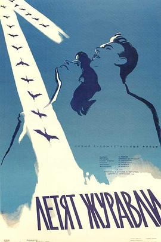
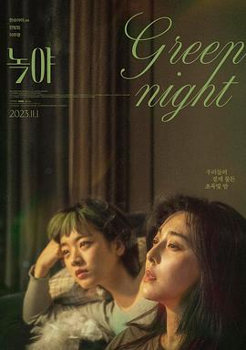

2023年11月
11 条
其中 8 条带正文
广播发布后不可编辑，所以每条都是那一刻的原话。
2023-11-26 23:32:31
 读过 云彩收集者手册 ★★★★★
读过 云彩收集者手册 ★★★★★
好好，已经收集了三天的了。
2023-11-26 23:32:08
 在读 海边的卡夫卡 ★★★★☆
在读 海边的卡夫卡 ★★★★☆
村上的不一样的尝试。
2023-11-25 21:48:00
看过 涉过愤怒的海 ★★★★★
情节反转跌宕，将想要讨论的基本盘扩大到婚姻家庭社会中，故事虽然简单，但是内涵比上一部更加深刻。画面冷冽严肃萧瑟，台风的背景让情感的迸发更加强烈。超广角镜头打到脸上，注重表情特写。长镜头调度成熟自然，爬楼梯那段有点比较《雁南飞》。只是不明白为什么画幅比例有时有的不同，虽然对故事影响不是很大。老金在地下室中火屑滥飞，红光一片张力十足。周迅真不愧是落水美人，上次跳苏州河这次直接入海。在地铁追逐时老金接了个电话，此时画面一拉我就知道是老曹的作品没跑了。
2023-11-18 22:50:55
看过 黑天鹅 / Black Swan ★★★★★
剧情反转不断。中间黑天鹅的蜕变真的艳人特别。这是否意味着殉道者的宿命。
2023-11-11 16:23:56
看过 关于莉莉周的一切 / リリイ·シュシュのすべて ★★★☆☆
好多重叠的人物。分不清。
2023-11-11 13:29:10
看过 哆啦A梦：伴我同行 / STAND BY ME ドラえもん ★★★★★
蛮好的，童年时看的。
2023-11-10 23:35:15

这镜头的调度真的强得离谱。
2023-11-10 21:21:24
 想看 特写 / کلوزآپ
想看 特写 / کلوزآپ
2023-11-04 22:23:32

2023-11-04 22:21:48
看过 烈日灼心 ★★★★☆
当了一个坏人是否就不配当做一个好好人了。摄影有些随意，不知道是否是刻意而为。
2023-11-01 23:00:19
收藏日记到豆列 理解 专访西川：写作是精神的独自开花｜豆瓣读书·文学访谈Vol.1